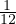
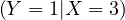
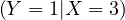
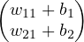
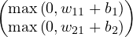

Professor: Tom Dupuis
Student e-mail: jose-antonio.lorencio-abril@student-cs.fr
This is a summary of the course Machine Learning taught at the Université Paris Saclay - CentraleSupélec by Professor Tom Dupuis in the academic year 23/24. Most of the content of this document is adapted from the course notes by Dupuis, [1], so I won’t be citing it all the time. Other references will be provided when used.
Artificial Intelligence is a wide concept, encompassing different aspects and fields. We can understand the term AI as the multidisciplinary field of study that aims at recreating human intelligence using artificial means. This is a bit abstract, and, in fact, there is no single definition for what this means. Intelligence is not fully understood, and thus it is hard to assess whether an artificial invention has achieved intelligence, further than intuitively thinking so.
For instance, AI involves a whole variety of fields:
Perception
Knowledge
Cognitive System
Planning
Robotics
Machine Learning (Neural Networks)
Natural Language Processing
Leveraging all of these, people try to recreate or even surpass human performance in different tasks. For example, a computer program that can play chess better than any human could ever possibly play, such as Stockfish, or a system that is able to understand our messages and reply, based on the knowledge that it has learnt in the past, such as ChatGPT and similar tools. Other examples are self-driving cars, auto-controlled robots, etc.
Therefore, AI is a very wide term, which merges many different scientific fields. Machine Learning, on the other side, is a narrower term, which deals with the study of the techniques that we can use to make a computer learn to perform some task. It takes concepts from Statistics, Optimization Theory, Computer Science, Algorithms, etc. A relevant subclass of Machine Learning, which has come to be one of the most prominent fields of research in the recent years, is Neural Networks or Deep Learning, which consists on an ML technique based on the human brain. Many amazing use cases that we see everywhere, like Siri (Apple assistant), Cortana (Windows assistant), Amazon recommender system, Dall-E (OpenAI image generation system), etc. Not only this, but the trend is growing, and the interest in DL is continuously increasing.
This is partly also due to the increase in computing resources, and the continuous optimization that different techniques are constantly experiencing. For instance, for a model trained on one trillion data points, in 2021 the training process required around 16500x less compute than a model trained in 2012.
But not everything is sweet and roses when using DL. Since these systems are being involved in decision making processes, there are some questions that arise, like whose responsibility is it when a model fails? Moreover, data is needed to train the models, so it is relevant to address how datasets should be collected, and to respect the privacy of the people that produce data. In addition, the recent technologies that are able to generate new content and to modify real content, make it a new issue that AI can create false information, mistrust, and even violence or paranoia.
Nonetheless, let’s not focus on the negative, there are lots of nice applications of DL, and it is a key component to deal with data, achieving higher performance than traditional ML techniques for huge amount of data.
In 1950, Alan turing aimed to answer the question ’Can machines think?’ through a test, which came to be named the Turing Test, and consists in a 3 players game. First, a similar game is the following: 2 talkers, a man and a female, and 1 interrogator. The interrogator asks questions to the talkers, with the aim of determining who is the man and who is the female. The man tries to trick the interrogator, while the woman tries to help him to identify her.
Then, the Turing Test consists in replacing the man by an artificial machine. Turing thought that a machine that could trick a human interrogator, should be considered intelligent.
Later, in 1956, in the Dartmouth Workshop organized by IBM, the term Artificial Intelligence was first used to describe every aspect of learning or any other feature of intelligence can be so precisely described that a machine can be made to simulate it.
From this year on, there was a focus on researching about Symbolic AI, specially in three areas of research:
Reasoning as search: a different set of actions leads to a certain goal, so we can try to find the best choice of action to obtain the best possible outcome.
Natural Language: different tools were developed, following grammar and language rules.
Micro world: small block based worlds, that the system can identify and move.
In 1958, the Perceptron was conceived, giving birth to what is called the connectionism, an approach to AI based on the human brain, and a big hype that encouraged funding to support AI research. At this era, scientists experience a bit of lack of perspective, thinking that the power of AI was much higher than it was. For instance, H. A. Simon stated in 1965 that ’machines will be capable, within twenty years, of doing any work a man can do.’ We can relate to our time, with the huge hype that AI is experiencing, as well as the many apocaliptic theories that some people are making. Maybe we are again overestimating the power of AI.
The time from 1974 to 1980 is seen as the first winter of AI, in which research was slowed down and funding was reduced. This was due to several problems found at the time:
There were few computational resources.
The models at the time were not scalable.
The Moravec’s paradox: it is comparatively easy to make computers exhibit adult level performance on intelligence test or playing checkers, and difficult or impossible to give them the skills of a one-year-old when it comes to perception and mobility.
Marvin Minsky made some devastating critics to connectionism, compared to symbolic, rule-based models:
Limited capacity: Minsky showed that single-layer perceptrons (a simple kind of neural network) could not solve certain classes of problems, like the XOR problem. While it was later shown that multi-layer perceptrons could solve these problems, Minsky’s work resulted in a shift away from neural networks for a time.
Lack of clear symbols: Minsky believed that human cognition operates at a higher level with symbols and structures (like frames and scripts), rather than just distributed patterns of activation. He often argued that connectionist models lacked a clear way to represent these symbolic structures.
Generalization and Abstraction: Minsky was concerned that connectionist models struggled with generalizing beyond specific training examples or abstracting high-level concepts from raw data.
Inefficiency: Minsky pointed out that many problems which seemed simple for symbolic models could be extremely computationally intensive for connectionist models.
Lack of explanation: Connectionist models, especially when they become complex, can be seen as "black boxes", making it difficult to interpret how they arrive at specific conclusions.
Over-reliance on learning: Minsky believed that not all knowledge comes from learning from scratch, and some of it might be innate or structured in advance. He felt connectionism put too much emphasis on learning from raw data.
In 1980, there was a boom in expert knowledge systems that made AI recover interest. An expert system solves specific tasks following an ensemble of rules based on knowledge facilitated by experts. A remarkable use case was the XCON sorting system, developed for the Digital Equipment Corporation, which helped them save 40M$ per year. In addition, connectionism also came again on scene, thanks to the development of backpropagation applied to neurons, by Geoffrey Hinton. All these achievement made funding to come back to the field.
Nonetheless, there came a second winter of AI, from 1987 to 1994, mainly because several companies were disappointed and AI was seen as a technology that couldn’t solve wide varieties of tasks. The funding was withdrawn from the field and a lot AI companies went bankrupt.
Luckily, from 1995 there started a new return of AI in the industry. The Moore’s Law states that speed and memory of computer doubles every two years, and so computing power and memory was rapidly increasing, making the use of AI systems more feasible each year. During this time, many new concepts were introduced, such as intelligent agents as systems that perceive their environment and take actions which maximize their chances of success; or different probabilistic reasoning tools such as Bayesian networks, hidden Markov models, information theory, SVM,... In addition, AI researchers started to reframe their work in terms of mathematics, computer science, physics, etc., making the field more attractive for funding. A remarkable milestone during this time was the victory of Deep Blue against Garry Kasparov.
The last era of AI comes from 2011 to today, with the advent and popularization of Deep Learning (DL), which are deep graph processing layers mimicking human neurons interactions. This happened thanks to the advances of hardware technologies, that have enabled the enormous computing requirements needed for DL. The huge hype comes from the spectacular results shown by this kind of systems in a huge variety of tasks, such as computer vision, natural language processing, anomaly detection,...
In summary, we can see how the history of AI has been a succession of hype and dissapointment cycles, with many actors involved and the industry as a very important part of the process.
In this section, we review some notation, and basic knowledge of Linear Algebra, Probability and Machine Learning.
A scalar is a number, either real and usually denoted x ∈ ℝ, or natural and denoted n ∈ ℕ. A vector is an array of numbers, usually real, x ∈ ℝn, or

A matrix is a 2-dimensional array of numbers, A ∈ ℝn×m, or
A tensor is an n-dimensional array of numbers, for example A ∈ ℝm×k×p is a 3-dimensional tensor.
Usually, we will be working with matrices, which can be operated in different ways:
Transposition: AT is the transposed of A, defined as ij = Aj,i.
Multiplication: Let A ∈ ℝm×k,B ∈ ℝk×n, their multiplication, C ∈ ℝm×n is defined as

Note that the following holds for every matrix A,B:

Point-wise operations: if we have two matrices of the same size, A,B ∈ ℝm×n, we can use apply scalar operator point-wise to each pair of elements in the same position in the two matrices. For example, the sum or the substraction of matrices.
There are also special matrices:
Identity matrix: the identity matrix is a square matrix that preserves any vector it is multiplied with. For vectors of size n, the identity matrix In verifies
Inverse matrix: the inverse of a square matrix, A ∈ ℝn×n, when it exists, is defined as the only matrix A-1 such that
Another important concept is that of the norm, which is basically measuring how far a point is from the origin of the space and can be used to measure distances:
A very important family of norms is the Lp norm, defined as

The Euclidean norm is the L2 norm, noted  and equivalent to computing
and equivalent to computing  . In Machine Learning, it is not
uncommon to find the use of the squared Euclidean norm, since it maintains the ordinals and is easier to operate with.
The Manhattan norm is the L1 norm, and it is used when the difference between zero and nonzero elements is
important. Finally, the Max norm is the L∞, or
. In Machine Learning, it is not
uncommon to find the use of the squared Euclidean norm, since it maintains the ordinals and is easier to operate with.
The Manhattan norm is the L1 norm, and it is used when the difference between zero and nonzero elements is
important. Finally, the Max norm is the L∞, or  ∞ = maxi.
∞ = maxi.
A random variable, X, is a variable that can take different values, x, randomly. They can be discrete, like the number drawn from a dice, or continuous, like the humidity in the air.
A probability distribution, p, is a Probability Mass Function (PMF) for discrete variables, and a Probability Density Function (PDF) for continuous random variables. It must satisfy:
The domain of p describe all possible states of X.
∀x ∈ X,p ≥ 0.
≥ 0.
∫
x∈Xp dx = 1.
dx = 1.
It is usual to have two (or more) random variables, X and Y , and to be interested in the probability distribution
of their combination, p . In this context, we define the marginal probability of the variable X
as
. In this context, we define the marginal probability of the variable X
as

The conditional probability of the variable Y conditioned to X = x is
Finally, there is the chain rule of conditional probabilities, in which we start with n random variables, X1,...,Xn, and it follows:
Example 2.1. For example, let’s say X =  , Y =
, Y =  and Z = with the following probabilities:
and Z = with the following probabilities:
| X | Y | Z | p |
| 1 | 1 | 1 |  |
| 1 | 1 | 2 |  |
| 1 | 2 | 1 |  |
| 1 | 2 | 2 |  |
| 2 | 1 | 1 | |
| 2 | 1 | 2 | |
| 2 | 2 | 1 |  |
| 2 | 2 | 2 |  |
| 3 | 1 | 1 | |
| 3 | 1 | 2 | |
| 3 | 2 | 1 |  |
| 3 | 2 | 2 |  |
Then, the marginal probabilities for the variable X are

The conditional probability for the event  is:
is:

The conditional probability for the event  is:
is:
The probability of the event  could be computed from the conditional probabilities as follows, in
case we only knew these:
could be computed from the conditional probabilities as follows, in
case we only knew these:
P = = | P ⋅ P ⋅ P ⋅ P ⋅ P | ||
| = |  ⋅ ⋅ ⋅ ⋅ = =  = =  . . |
When there are several variables, it is possible that the value of one of them is dependant, somehow, on the values that the other variables take; or that it is not:
In Statistics and Machine Learning, there are some measures that summarize information about random variables, and that hold great importance.
Definition 2.3. The expectation of a function f where x ~ p
where x ~ p is the average value of f over x:
is the average value of f over x:
![∫
Ex~p[f (x)] = p(x)f (x)dx.
x∈X](summary64x.png)
The variance of f measures how the values of f varies from its average:
measures how the values of f varies from its average:
and the standard deviation is the square root of the variance.
The covariance of two random variables provides informaiton about how much two values are linearly
related. More generally, if we apply two functions f , where x ~ p
, where x ~ p , and g
, and g , where y ~ p
, where y ~ p , the
covariance between them is:
, the
covariance between them is:
To finalize with this review chapter, we are going to remember some basic concepts of Machine Learning.
First, let’s give a definition of the concept:
The task T can be classification, regression, translation, generation, anomaly detection,...
The performance measure P is specific to the tasks involved, and can be accuracy for classification, for example. It is measured on a test set.
The experience E is divided into two main categories:
Supervised learning: a dataset of points associated with a label or a target determines the expected outcome of each event.
Unsupervised learning: a dataset of points without labels or targets, in which the desirable outcome needs to be define in some different way.
Mathematically, we can formalize this as having a dataset of m points and k features, which can be represented as a
matrix X ∈ ℝm×k. In the case of supervised learning, X is associated with a vector of labels, y, and we aim to learn a
joint distribution, p to infer
to infer

The goal is then to find a function that associates each x to the best approximation of y, and that is capable of
generalizing to unseen data. Usually,  is parameterized by a set of parameters, θ, which are learnt during
training.
is parameterized by a set of parameters, θ, which are learnt during
training.
The main challenge of an ML model is generalization to unseen data estimated on test data after the training on training data. Overfitting occurs when the gap between training error and test error is too large, while underfitting occurs when the training error is too large. The capacity of a model is the range of functions that it is able to leanr and control how likely the model can overfit or underfit. This is visualized in Figure 1.
When we want to train a model, we will define the parameters that characterize it, and then we need to obtain the best possible of the parameters, according to the data. For this, we use estimators:
There are different ways to construct estimators, but one that is frequently used and that has solid mathematical
foundations is the maximum likelihood estimator. Consider a dataset X = and p a parametric
family of probability distribution that maps for each x the probability pdata . This is, for each θ, p is a
probability density function. The maximum likelihood estimator is then
. This is, for each θ, p is a
probability density function. The maximum likelihood estimator is then
| θML = | arg maxθpmodel | ||
| = | arg maxθ ∏
i=1np
model , , |
considering that all instances of data are independent and identically distributed (iid). It is also a common practice to use the maximum log-likelihood instead, removing the product and avoiding floating point issues, since when the dataset is large, the product will rapidly go to 0. In addition, the logarithm does not modify the ordinals of the function. Therefore, we can use:
A deeper explanation of the perceptron can be read in my notes from another course, https://lorenc1o.github.io/BDMA_Notes/universities/UPC/Machine_Learning_summary.pdf.
A perceptron is an algorithm for supervised learning of binary classifiers. That is, we have a dataset X ∈ ℝn×m
associated with a vector of labels y ∈ n. Then, the perceptron learns a function parametrized by a vector of
weights w ∈ ℝm and a bias b, such that:
n. Then, the perceptron learns a function parametrized by a vector of
weights w ∈ ℝm and a bias b, such that:
Therefore, it is a linear classifier, which divides the input space into two regions separated by a hyperplane. This means that a perceptron cannot separate non-linear data.
A deeper explanation of the MLP can be read in my notes from another course, https://lorenc1o.github.io/BDMA_Notes/universities/UPC/Machine_Learning_summary.pdf.
When we say ’Deep’ neural network, we refer to a series of stacked perceptrons. However, just like this, the model is still linear. This is why activation functions are introduced. An activation function is a function that is applied to the output of a perceptron, to make it non linear.
For example, ReLU is a piecewise-linear function defined as
This function preserves much of the good oprimization properties of a linear function, i.e., it is differentiable (apart from one point), and its derivative is constant.
Example 3.1. Learn the XOR function with a 2-layer MLP.
The XOR function is represented with the table:
| x1 | x2 | y |
| 0 | 0 | 0 |
| 0 | 1 | 1 |
| 1 | 0 | 1 |
| 1 | 1 | 0 |
We want to use a 2-layer MLP to learn this function:
In h1, it will be
and in h2
This can be represented as
Then, we apply ReLU
and finally the output layer
Let’s see the different inputs:
| x1 | x2 | h | y |
| 0 | 0 |  + +  = = |  + by ≤ 0 + by ≤ 0 |
| 0 | 1 |  + by > 0 + by > 0 |
|
| 1 | 0 |  |  + by > 0 |
| 1 | 1 | + by ≤ 0 | |
A solution is:
Let’s check:
| x1 | x2 | h | y |
| 0 | 0 | = 0 ≤ 0 | |
| 0 | 1 |  | = 1 > 0 |
| 1 | 0 |   = 1 > 0 = 1 > 0 |
|
| 1 | 1 |   = 0 ≤ 0 = 0 ≤ 0 |
|
So, it works! Note that this solution is not unique!
What happens is actually that the solution for the XOR problem is not linearly separable:
But, the hidden layer transforms this space, making the problem linearly separable, and therefore solvable in the last layer:
The cost function is important when working with neural networks, because our goal is to ultimately train the model to solve some problem, and the cost functions will be the function that our model will aim at minimizing, thus guiding the training process.
Usually, we will need to choose a cost function  that is suitable for our problem. Then, we will minimize with
stochastic gradient descent, by:
that is suitable for our problem. Then, we will minimize with
stochastic gradient descent, by:
Training on a training dataset.
Estimating error on an evaluation dataset.
Computing the gradients using backpropagation.
In this process, we will aim to find good local minima, instead of global minimum. This is related to overfitting (learning only the training data, losing generalization capabilities), and to the empirical fact that deep neural network have surprisingly good local and non-global optima.
In the general case, we use the maximum likelihood principle, taking the output types of the network into account. This
means that we assume our dataset to be independently and identically distributed (i.i.d.) from an unknown
distribution, pdata . We choose a parametric model family pmodel
. We choose a parametric model family pmodel represented as a neural network, which we use
to estimate an approximation of the true distribution. For this, we utilize the maximum likelihood estimator,
defined as
represented as a neural network, which we use
to estimate an approximation of the true distribution. For this, we utilize the maximum likelihood estimator,
defined as
Usually, to avoid floating point errors, the log-likelihood is used instead:
In the maximum likelihood estimation framework, we might apply activation functions to the output layer to get a desired structure for our distribution. This choice will also influence the mathematical form of the cost function. For example, we can use linear units for regression or for Gaussian distributions, sigmoid units for binary classification or softmax units for multi-class classification.
Linear units for regression A linear output layer is such that, given the features h, the output is
where W is the weights vector and b the bias.
We can use this to predict real or vector valued variables, such as prices, biometrics,...
Linear unit for Gaussian distribution A Gaussian output unit is such that, given features h, a linear layer produces a vector ŷ representing the mean and the covariance matrix of a conditional Gaussian distribution:
Covariance is usually not modelled or simplified to be diagonal (in which case we need to ensure that the output is non-negative).
Binary classification In this case, the objective is to predict a binary variable, y: the neural network must predict P. Thus, we must ensure that the output is a probability, in the interval . For this, we can take
The problem with this approach is that if WTh + b
![[0,1]](summary136x.png) then the gradient is 0 and the training will stop. To solve
this issue, we can use a sigmoid unit, which is
then the gradient is 0 and the training will stop. To solve
this issue, we can use a sigmoid unit, which is
Softmax unit for multi-class classification
Now our objective is to classify the input data into one among N > 2 classes. We want to predict ŷ with P,
subject to ∈![[0,1]](summary141x.png) ,∀i and ∑
iyi = 1.
,∀i and ∑
iyi = 1.
In the output layer we can have N perceptrons, each of them computing zi = log P, i.e., the logits. With this, we can apply the softmax output unit to all of them, obtaining our vector of probabilities, as
In classification problems we want to estimate the probability of different outcomes. Let the estimated probability of
outcome i be pmodel with to-be-optimized parameters θ and let the frequency of outcome i in the training set be
p. Given N conditionally independent samples in the training set, then the likelihood of the parameters θ of the
model pmodel on the training set is:
on the training set is:
Therefore, the log-likelihood, divided by N, is

Cross-entropy minimization is frequently used in optimization and rare-event probability estimation. When comparing a distribution q against a fixed reference distribution p, cross-entropy and KL divergence are identical up to an additive constant (since p is fixed): According to the Gibbs’ inequality, both take on their minimal values when p = q, which is 0 for KL divergence, and H for cross-entropy. In the engineering literature, the principle of minimizing KL divergence (Kullback’s "Principle of Minimum Discrimination Information") is often called the Principle of Minimum Cross-Entropy (MCE), or Minxent.
Depth is the longest data path data can take from input to output. For a deep feed forward NN, depth is the number of hidden layers plus the output layer. State-of-the-art architectures used in practice have dozens to hundreds of layers.
Theorem 3.1. Universal Approximation Theorem
Let φ be a nonconstant, bounded, and monotonically increasing continuous function. Let Im0 denote
the m0-dimensional unit hypercube,
be a nonconstant, bounded, and monotonically increasing continuous function. Let Im0 denote
the m0-dimensional unit hypercube, ![[0,1]](summary151x.png) m0. The space of continuous functions on Im
0 is denoted by
C.
m0. The space of continuous functions on Im
0 is denoted by
C.
Then, given any function f ∈ C and ε > 0, there exists an integer m1 and sets of real constants
αi,bi and wij ∈ ℝ where i = 1,...,m1 and j = 1,...,m0 such that we may define
and ε > 0, there exists an integer m1 and sets of real constants
αi,bi and wij ∈ ℝ where i = 1,...,m1 and j = 1,...,m0 such that we may define
as an approximate realization of the function f, that is
This theorem is very relevant, because it says that for any mapping function f in supervised learning, there exists a MLP with m1 neurons in the hidden layer which is able to approximate it with a desired precision.
However, it only proves the existence of a shallow (just one hidden layer) MLP with m1 neurons in the hidden layer that can approximate the function, but it does not tell how to find this number.
As a rule of thumb for the generalization error, it is
where V Cdim is the Vapnik-Chervonenkis dimension, a measure of the capacity of a model. It refers to the largest set of points that the model can shatter. It is not easy to compute, but a rough upper bound for a FFNN is O, with W being the total number of weight in the network.
Also, this theorem hints us that having more neurons in the hidden layers will give us better training error, but worse generalization error: overfitting.
However, for most functions m1 is very high, and becomes quickly computationally intractable: so we need to go deeper.
Theorem 3.2. No Free Lunch Theorem
Multiple informal formulations:
For every learning algorithm A and B, there are as many problems where A has a better generalization error than problems where B has a better one.
All learning algorithms ahve the same generalization error if we average over all learning problems.
There is no universally better learning algorithm.
Depth Property
The number of polygonal regions generated by a MLP with a ReLU function, d inputs, n neurons per hidden layer and l layers is
This number grows exponentially with depth. This means that adding depth basically allows for more transformations of the input space.
The gradient of a function f : ℝn → ℝ, is ∇f : ℝn → ℝn, defined at the point p = as
This is, it’s the local derivative or slope of each dimension at a certain point.
Going in the opposite direction of the gradient is a naïve but practical guess of the direction of the local minimum. This is the base for the gradient descent method.
Gradient-descent method (Cauchy, 1847)
A parametric function f can be iteratively minimized by following the opposite direction of the
gradient:
can be iteratively minimized by following the opposite direction of the
gradient:
where ε > 0 is the learning rate.
We stop iterating when the gradient is near to 0.
Notice that this is useless if we have a close form for the gradient! In that case it is easier to just minimize it. This is useful when this is not the case, which always happens for neural networks.
In addition, there are variations to the method, for example, we can vary ε during training.
Stochastic gradient descent
Given a cost function f, parameters of the network are updated with
For the negative log-likelihood (MLE), the function is:
so the estimated gradient is
The problem with this approach is that to take a single step of gradient descent, we must compute the loss over the whole dataset everytime, making the method not scalable at all. This is called batch gradient descent.
One solution is to compute the gradient with 1 sample only at each step, which is very noisy and inefficient, but works. This is the stochastic gradient descent.
In the middle ground, we find the mini-batch gradient descent, which divides the dataset into subsets, and updates the parameters after processing each of these subsets. A batch is a collection is a collection of samples used at each iteration for performing SDG in DL. A bigger batch provides a better gradient estimation, and therefore a faster learning, but also implies more device memory and slower descent.
Therefore, there is a tradeoff between money and performance at companies. In practice, a batch is set between 1 to 256 on one GPU.
But there is an even greater problem, the computation of the gradient is computationally very costly. To go around this problem, back-propagation was invented, as an efficient technique for gradient computation.
The back-propagation algorithm is based on the chain rule for the derivative of composite functions: if we have
y = g and z = f
and z = f = f
= f =
=  , then
, then
or, abusing notation,
This is generalized to multivariate funtions as follows: let x ∈ ℝm,y ∈ ℝn,g : ℝm → ℝn and f : ℝn → ℝ. If
z = f = f
= f , then
, then
or,
where is the Jacobian of g.
Now, back-propagation is a recursive application of the chain rule, starting from the cost function. The algorithm works as follows:
Forward pass: a feedforward network takes as input x and produces the output ŷ. The information flows from layer to layer.
Cost function: compute the error between expected output and actual output.
Back-propagate: evaluate the individual gradient of each parameter and propagates them backwards to update them. For this, we use the concept of local derivative: the derivative of connected nodes are computed locally on the edges of the graph. For non-connected nodes, we multiply the edges connected between the nodes, and we sum over all incoming edges.
If we do this in a forward way, summing over all paths becomes intractable pretty quickly, while when doing it in a backwards way, it allows to obtain the derivative of the output with respect to every node directly in one pass. This leads to massive parallelization.
I did a more detailed explanation, with visualizations in my previous notes, https://lorenc1o.github.io/BDMA_Notes/universities/UPC/Machine_Learning_summary.pdf.
People and animals learn by interacting with the environment that sorround them, differing from certain other types of learning. This process is active, rather than passive: the subject needs to perform interactions with the environment, to obtain knowledge. Also, the interactions are usually sequential, with future interactions possibly depending on earlier ones.
Not only this, but we are goal oriented: we act towards an objective. And, more importantly, we can learn without examples of optimal behavior! Instead, we optimise some reward signal obtained from the outcome of our actions.
It is in these observation that Reinforcement Learning (RL) arises as a learning paradigm, based on the interaction loop: there is an agent in an environment; the agent can make actions in the environment, and get observations from it.
RL relies on the reward hypothesis:
This hypothesis basically says that every objective that an agent can have, can be stated in terms of maximizing a reward associated to the actions of the agent with respect to this objective.
For example, if the objective of the agent is to fly a helicopter from point A to point B, then the reward could be negatively affected by the distance to point B, by the time taken to reach B,...
Now, it is important to realize that there exist different reasons to learn:
Find solutions to problems.
Adapt online to unforseen circumstances.
Well, RL can provide algorithm for both cases! Note that the second point is not just about generalization, but also to cope with the so-called data shift, efficiently, during operation.
With all this, now we can define RL:
This requires us to think about time, consequences of actions, experience gathering, future prediction, uncertainty,...
It has a huge potential scope and is a formalisation of the AI problem.
Definition 5.1. The environment is the world of the problem at hand, with agents in it that can perform actions, over time.
At each time step t, the agent:
Receives observation Ot and reward Rt from the environment.
Executes action At.
And the environment:
Receives action At.
Emits observation Ot+1 and reward Rt+1.
But, what is a reward?
A reward, Rt, is a scalar feedback signal which indicates how well the agent is doing at step t: it defines how well the goal is being accomplished!
Therefore, the agent’s job is to maximize the cummulative reward of the future steps, i.e.,
This is called the return. But, when one thinks about it carefully, one realizes that it is hard to know the future rewards with such precision. Therefore, it is also usual to use the value, which is the expected return, taking into account the current state, s:
This depends on the actions the agents takes, and the goal is to maximize it! To achieve this, the agent must pick suitable actions.
Therefore, rewards and values define the utility of states and actions, and in this setup there is no supervised feedback.
Note, also, that this values can be defined recursively as
The environment state is the environment’s internal state, which is usually invisible or partially visible to the agent. It is very important, but it can also contain lots of irrelevant information.
An environment is fully observable when the agent can see the full environment state, so every observation reveals the whole environment state. That is, the agent state could just be the observation:
Note that St is the agent state, not the environment state!
As we have outlined, the goal is to select the actions that maximise the value. For this, we may need to take into account that actions may have long term consequences, delaying rewards. Thus, it may be better to sacrifice immediate reward to gain long-term reward.
The decision making process that for a given state chooses which action to take is called a policy.
To decide which action to take, we can also condition the value on actions:
so, for a given state s, a possible set of actions Ats, we could decide which action to take as
Then, the history is the full sequence of observation, actions and rewards:
Markov Decision Processes (MDPs) are a useful mathematical framework, defined as:
This means that the current state is the only information needed to make a decision, we don’t need the full story. For example, think in a chess game: there are many ways to arrive to a certain position, but it really does not matter how to got to the position, the past does not affect your choice now.
In order for a process to be Markov, full observability is required. When the situation is of partial observability, the observations are not Markovian, so using the observation as state is not enough to make the decision. This is called a partially observable Markov decision process (POMDP). Note that the environment state can still be Markov, but the agent does not know it. In this case, we might be able to construct a Markov agent state.
In the general case, the agent state is a function of the history:
where u is a state update function.
Usually, the agent state is much smaller than the environment state.
Example 5.1. A not Markov process:
Consider the following maze to be the full environment:
And consider the following observations:
They are indistinguishable! This process is not Markov, because only taking into account the current state, we cannot identify where we are.
To deal with partial observability, agent can construct suitable state representations. Some examples of agent states are:
Last observation: St = Ot (might not be enough).
Complete history: St = t (might be too large).
A generic update: St = u (but how to design u?)
Constructing a fully Markovian agent state is often not feasible and, more importantly, the state should allow for good policies and value predictions.
As we saw, a policy defines the agent’s behavior: it is a map from the agent state to an action. Policies can be deterministic,
or stochastic,
We saw the value before, which is the expected return. However, it is usual to introduce a discount
factor, γ ∈![[0,1]](summary192x.png) , which trades off importance of immediate and long-term rewards. This way, the value
becomes
, which trades off importance of immediate and long-term rewards. This way, the value
becomes
The value depends on the policy, π, and can be used to evaluate the desirability of states, as well as to select between actions.
Note the role of the discount factor: the higher it is, the higher the focus on long term outcomes.
Now, using the recursive expression of the return, Gt = Rt+1 + γGt+1, we can rewrite the value as
where A ~ π means A is chosen by policy π in state s. This is known as a Bellman equation. A similar equation holds for the optimal value, i.e., the highest possible value:
![v*(s) = maax E[Rt+1 + γv* (St+1)|St = s,At = a].](summary196x.png)
Note how this does not depend on a policy, it is just the maximum achievable value from the current state.
Agents often approximate value functions, and with an accurate value function approximation, the agent can behave optimally, or very well, even in intractably big domains.
A model predicts what the environment will do next. For example,  predicts the next state, given the current state
and an action:
predicts the next state, given the current state
and an action:
Or  predicts the next immediate reward:
predicts the next immediate reward:
![R (s,a) ≈ E [Rt+1|St = s,At = a].](summary198x.png)
Note that a model does not immediately give us a good policy! We still need to plan and see how actions and states are related.
Example 5.2. Consider the following maze, where the rewards are -1 per time-step, the actions are to go N, E, S and W, and the states are the agent’s location:
| Start | |||||||||
| End | |||||||||
The following arrows represent the policy, π , for each state s:
, for each state s:
 | | | | | |||||
| Start | | ||||||||
| | |||||||||
| | | | | End | |||||
In the following one, the numbers represent the value vπ of each state s:
of each state s:
| -14 | -13 | -12 | -11 | -10 | -9 | ||||
| Start | -16 | -15 | -12 | -8 | |||||
| -16 | -17 | -6 | -7 | ||||||
| -18 | -19 | -5 | |||||||
| -24 | -20 | -4 | -3 | ||||||
| -23 | -22 | -21 | -22 | -2 | -1 | End | |||
The grid layout represents the partial transition model ss′a, and numbers represent the immediate reward, ss′a from
each state s, which is -1 for all a and s′ in this case.
An agent is model free when the behavior of the environment is not known. The agent needs a policy or a value function to operate and there is no model. On the other hand, it is model based when the environment is known by means of a model. In this case, a policy and a value function might be optional, since it is possible that the agent can operate just knowing the model.
Model free agents are simpler, while model based agents are more sample efficient.
Another categorization is the following:
Value based: there is no policy, it is implicit in the value function.
Policy based: there is no value function, the model operates only by means of the policy.
Actor critic: they have both a policy and a value function.
Prediction consists in evaluating the future, for a given policy, i.e., what are the values in each state?
Control refers to the problem of optimising the future to find the best policy, i.e., which actions to take?
These two problems are strongly related, because the best actions to take will be decided using our predictions about the future:
Two fundamental problems in RL are:
Learning: the environment is initially unknown and the agent interacts with it to learn.
Planning/search: a model of the environment is given or learnt, and the agent plans in this model.
In order to learn, we need to define all components of the problem as functions:
Policy: π : S → A (or probabilities over A).
Value functions: v : S → ℝ.
Models: p : S → S or r : S → ℝ.
State update: u : S × O → S.
Then, we can use, for example, neural networks and deep learning techniques to learn. But we do need to be careful, because in RL it is usual to violate assumptios made in supervised learning, such as having i.i.d. samples, or stationarity.
We saw the notion of MDP, and now we formalize it:
Definition 6.1. A Markov Decision Process (MDP) is a tuple where:
S is the set of all possible states with the Markov Property.
A is the set of all possible actions.
p is the joint probability of a reward, r, and next state, s′, given a state s and an action a.
γ ∈ is a discount factor that trades off later rewards to earlier ones.
Remark 6.1. p defines the dynamics of the problem.
Sometimes, it is useful to marginalise out the state transitions or expected rewards:
to obtain the probability of arriving to a certain state.
Also, the expected reward:
There is an alternative equivalent definition, which introduces the notion of the expected reward into the concept, and takes it out of the probabity function:
Definition 6.2. A MDP is a tuple where:
S is the set of all possible states with the Markov Property.
A is the set of all possible actions.
p is the probability of transitioning to s′, fiven a state s and an action a.
r : S × A → ℝ is the expected reward, achieved on a transition starting in  ,
,
γ ∈![[0,1]](summary211x.png) is a discount factor that trades off later rewards to earlier ones.
is a discount factor that trades off later rewards to earlier ones.
Now, we have to clarify what is the Markov Property:
Therefore, in an MDP, the current state captures all relevant information from the history, it is a sufficient statistic of the past. So, once the state is known, the history may be thrown away.
Exercise 6.1. In an MDP, which of the following statemest are true?
p = p: false, the RHS does not
condition on At = a.
= p: false, the RHS does not
condition on At = a.
p = p: true.
p = p: false, the RHS does not condition on
At = a.
= p: false, the RHS does not condition on
At = a.
p = p: true.
It is also worth noting that most MDPs are discounted, and there are several reasons for these:
Problem specification: immediate rewards may actually be more valuable. For instance, animal/human behavior shows preference for immediate reward.
Solution side: it is mathematically convenient to discount rewards, because it allows for easier proofs of convergence, and avoids infinite returns in cyclic Markov processes.
As we outlined previously, the goal of an RL agent is to find a behavior policy that maximises the expected return Gt. Recall our definition for value funtion
Similarly, we can define the state-action values, as
and there is the following connection between them:
Also, we can define the maximum possible value functions:
The optimal value function specifies the best possible performance in the MDP. We can consider the MDP to be solved when we know the optimal value function.
In addition, value functions allow us to define a partial ordering over policies, having
With this partial ordering, the following theorem state that optimal policies exist for every MDP:
To find an optimal policy, we can maximise over q*:
That is, the optimal policy is to take action a in state s if a is the action that gives the highes state-action value given state s.
Remark 6.2. There is always a deterministic optimal policy for any MDP, and we know q*, we know the optimal policy immediately.
Also, there can be multiple optimal policies, and if multiple actions maximize q*, we can pick any of them.
Now, recall the Bellman Equations we saw previously. The following theorem explains how to express the value functions by means of these equations:


 . A
. A 

 .
.

 , is the maximum value function over all
policies,
, is the maximum value function over all
policies,